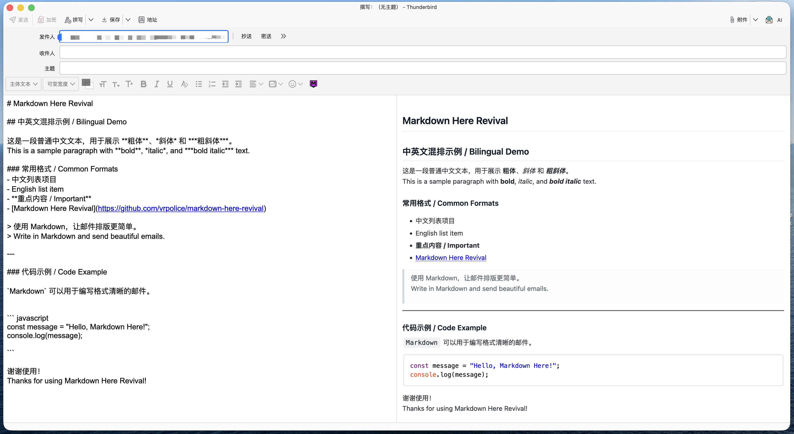

边写边预览
可调整大小的分栏预览会随草稿更新，标题、列表、引用、表格和链接的效果始终一目了然。
Thunderbird 的 Markdown 写作工具
直接用 Markdown 撰写邮件，在草稿旁实时查看效果，无需离开 Thunderbird 即可发送精美的 HTML 邮件。

实时预览
编写 Markdown 时即可在草稿旁查看渲染后的邮件，支持中英文内容、链接、引用、列表与代码高亮。
专注邮件写作流程
Markdown Here Revival 直接融入 Thunderbird 写信窗口，将熟悉的 Markdown 转换成适合邮件发送的 HTML。
可调整大小的分栏预览会随草稿更新，标题、列表、引用、表格和链接的效果始终一目了然。
支持 100 多种语言和 90 多款高亮主题，让技术邮件中的代码保持清晰。
无需离开编辑器，即可使用 LaTeX 公式、GFM 表格和 Emoji 自动补全。
发送前会净化 HTML；原始 Markdown 可以保留在已发送邮件中，方便再次编辑；点击发送时自动完成渲染。
工作方式
使用你已经熟悉的 Markdown 语法写信。
在旁边的面板中实时检查渲染效果。
扩展会安全地将草稿替换为带样式的 HTML。
从 Releases 下载 markdown-here-revival.xpi。
打开 Thunderbird 附加组件管理器，选择“从文件安装附加组件…”。
打开写信窗口，点击工具栏上的 M↓，或按下 Ctrl+Alt+M。
项目传承
Adam Pritchard 为浏览器和 Thunderbird 创建了 Markdown Here。
Rob Lemley 基于现代 Thunderbird MailExtensions API 重新实现了扩展。
本分支持续跟进新 ESR 版本，并改善 Thunderbird 中的邮件撰写体验。